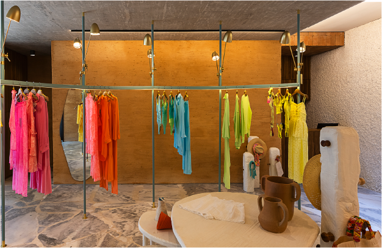
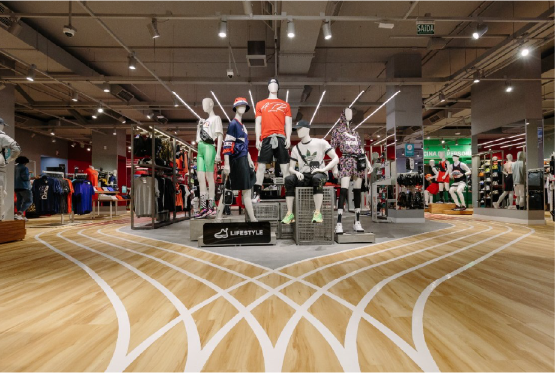

O design de lojas transcende a estética, tornando-se essencial na construção da identidade de uma marca e na promoção da interação emocional com os clientes. Nesse contexto, você verá, neste conhecimento, as nuances, tendências e facetas do design de lojas, desde formatos e técnicas de layout até a criação de ambientes envolventes.
Morgan (2014, p.30) comenta que, historicamente, os lojistas de grandes lojas de departamento decoravam suas fachadas e vitrines para chamar a atenção do público para dentro dos espaços comerciais. Porém, com o surgimento do visual merchandising na década de 1980, nasce a busca por oferecer uma experiência significativa ao público na parte interna dos estabelecimentos.
No cenário contemporâneo, a compreensão da importância do design de lojas é peça-chave para as marcas que buscam criar laços duradouros com seu público-alvo.
Você estudará conceitos inovadores e tendências que atualmente moldam o design de lojas, com destaque para a integração de elementos como ambientes “instagramáveis” e novas tecnologias, transformando a interação dos consumidores com o espaço comercial.

O design de lojas é uma disciplina multifacetada que vai além da organização de espaços comerciais, ou seja, é uma ferramenta estratégica para expressar a identidade de uma marca e influenciar a experiência do consumidor.
Esse conceito abrange a concepção e a implementação de ambientes que não apenas atraem a atenção, mas também contam uma história coesa e envolvente. No cerne do design de lojas está a busca pela harmonia entre a estética, a funcionalidade e a capacidade de criar conexões emocionais duradouras.
Segundo Morgan (2014, p.30), o design de lojas reúne todos os aspectos do visual merchandising: vitrines e interiores, instalações, mobiliários, acessórios e iluminação. É um tipo de projeto que deverá ser desenvolvido de forma conjunta, em parceria com uma equipe multidisciplinar, formada pelas áreas de marketing, visual merchandisers, arquitetos e designers de interiores.
A base do design de lojas reside na compreensão profunda da marca, seus valores e seu público-alvo. Cada elemento do espaço comercial, desde o layout até o mobiliário e os detalhes decorativos, deve ser cuidadosamente selecionado para comunicar a essência da marca. A atmosfera resultante não é apenas a de um local de transação comercial, mas um cenário estrategicamente projetado para cativar os sentidos dos consumidores, proporcionando uma experiência única e memorável.
Corte perspectivado da loja Cia Marítima
Fonte: Rosenbaum apud Archdaily (2022)
Corte em perspectiva ilustrada e humanizada da edificação de uma loja de roupa moda praia, A loja tem três andares, sendo que o primeiro andar tem exposição das roupas em arara curva. No segundo andar tem um espaço de jardim com mais araras para exposição de produtos. E no terceiro andar tem um espaço de repouso, com poltronas e puffs, com uma varanda. A loja lembra uma grande casa de praia.
Além disso, o design de lojas está em constante evolução, adaptando-se às mudanças das preferências dos consumidores, avanços tecnológicos e tendências de mercado. Marcas visionárias compreendem que o design de lojas não é uma mera formalidade, mas uma parte integrante da estratégia de negócios, capaz de diferenciar-se em um cenário competitivo e estabelecer uma ligação mais profunda com o público.
A seguir, será analisado o projeto realizado pelo escritório de arquitetura Rosembaum, para a Cia Marítima, no Rio de Janeiro/RJ. A marca é conhecida pela confecção de moda praia.

Loja Cia Marítima
Fonte: Finotti apud ArchDaily (2022)
Loja de moda praia com piso em pedra natural de formato irregular, nas cores branco e azul, lembrando o mar. Uma arara grande, em metal azul turquesa, formato curvo, está instalada com fixação no piso e no forro, com algumas peças coloridas de moda praia. Na arara tem algumas luminárias em metal dourado, de ponto focal, direcionadas para as peças de roupa. No centro da loja, uma peça representa um pilar baixo, com alguns ganchos em madeira, com chapéus e bolsas penduradas. Ao lado deste pilar tem três mesas com níveis e tamanhos diferentes, com formato orgânico, contendo um dos vasos de barro e uma bermuda exposta em cima da mesa mais alta.
No projeto da loja conceito de três pavimentos, no bairro Ipanema, toda a essência da marca foi conectada ao processo criativo do escritório Rosembaum, que, há muitos anos, tem como premissa o uso de materiais sustentáveis e apoio ao artesanato brasileiro. A atmosfera solar de praia, um ideal da marca Cia Marítima, foi expressa na escolha de cada material e elemento decorativo, garantindo um ambiente que lembra o mar, a areia e o sol, elementos da natureza. De maneira sutil, são o pano de fundo para o colorido das peças de roupa.
Nesse sentido, você consegue perceber como é importante a leitura do profissional de design de interiores para a essência da marca e para o que ela deseja transmitir aos seus clientes? O conceito do design de lojas transcende o aspecto estético, transformando-se em uma linguagem estratégica e expressiva, que eleva a experiência de compra a um patamar superior.
As tendências para o design de interiores de lojas estão constantemente evoluindo para atender às mudanças nas preferências dos consumidores, às inovações tecnológicas e à busca contínua por experiências únicas. Por isso, é necessário estar sempre em constante atualização, de olho nas novas demandas de cada público-alvo. Aqui estão algumas das mais recentes tendências que têm influenciado o design de interiores de lojas nos últimos tempos.
A ênfase na criação de experiências sensoriais imersivas tem se destacado. Isso envolve o uso de iluminação, aromas, música e texturas para estimular os sentidos dos clientes, proporcionando uma experiência de compra memorável.
A tecnologia está sendo cada vez mais integrada ao design de lojas, com realidade aumentada, realidade virtual e espelhos inteligentes sendo utilizados para proporcionar interações inovadoras e personalizadas, além de alternativas como caixas de autoatendimento, chamadas self-checkout.
A popularidade de lojas conceito, que buscam transmitir a essência da marca de maneira única, e de pop-up stores, que oferecem experiências temporárias e exclusivas, continua a crescer, destacando a importância da novidade e da exclusividade.
O design de lojas eco-friendly e a ênfase em práticas sustentáveis estão em ascensão. Materiais recicláveis, iluminação eficiente e outras práticas ambientalmente conscientes refletem o compromisso das marcas com a responsabilidade social.
A personalização está se tornando uma característica essencial do design de interiores de lojas. A capacidade de personalizar a experiência de compra, desde criar seus próprios produtos até a ambientação da loja, atende à crescente demanda por uma abordagem mais individualizada.
O minimalismo continua a ser uma tendência forte, com espaços clean e designs simplificados. A estética minimalista não apenas transmite uma sensação de modernidade, como também dá mais ênfase aos produtos em exibição.
Criar espaços visualmente atrativos, dignos de serem compartilhados nas redes sociais, tornou-se uma estratégia comum. Elementos decorativos únicos, murais artísticos e instalações criativas incentivam a interação nas redes sociais, promovendo a visibilidade e o reconhecimento da marca.
O design de interiores de lojas está se tornando mais inclusivo, considerando a diversidade de clientes em termos de idade, habilidades e origens culturais. Isso reflete uma abordagem mais aberta e acolhedora, para atender a uma variedade de público.
Alguns varejistas estão projetando suas lojas para replicar a sensação de estar em casa, criando ambientes aconchegantes e acolhedores. Essa abordagem visa criar uma conexão emocional mais profunda com os clientes.
A integração harmoniosa de experiências de compra on-line e offline é uma tendência crescente. Lojas físicas estão se tornando espaços de experimentação, enquanto a tecnologia facilita a transição suave entre os ambientes on-line e offline.
Na apresentação do formato do design das lojas, podem ser observados diversos tipos de ambiente. Os mais comuns são: outlet, concept, flagship e pop-up store. Para saber mais sobre cada formato, assista ao vídeo a seguir.
Você já reconhece a importância que o projeto de design de lojas tem para estabelecer uma conexão emocional com os consumidores e proporcionar experiências de compra memoráveis. Assim veja algumas técnicas que podem ser aplicadas para criar pontos de venda cativantes ao público.
Em supermercados, perceba que itens básicos da alimentação, como leite, ovos e pão, sempre estão expostos no fundo da loja. Saiba que essa distribuição não é por acaso. Mesmo que você tenha ido às compras somente para comprar pão, obrigatoriamente vai precisar passar por outros produtos até localizar o que foi comprar. Isso pode impulsionar o seu consumo por impulso, fazendo com que você permaneça e circule mais pelos setores, ampliando o ganho do supermercado com a sua presença. Dessa forma, o visual merchandiser vai organizar as principais áreas de um PDV, dividindo o espaço em quatro zonas ou áreas.
É a área de entrada do PDV, o primeiro local que o cliente acessa, é o espaço mais nobre para as vendas. Observe os locais de acesso e as saídas do PDV (talvez haja duas ou três entradas para os clientes). Esses locais são ideais para expor os produtos em liquidação ou aqueles que tenham sido apresentados nas campanhas de mídia da loja (televisão, folders). Também é um ótimo lugar para expor os lançamentos e as novidades.
A zona ouro é a que está situada logo depois da platina.
Normalmente, situa-se no meio do PDV.
Essa zona fica situada no fundo da loja. Nela é comum conter produtos de necessidade básica, ou seja, o que se vende muito, como pão e leite. Isso estimula o cliente a ir até o fundo do espaço, percorrendo todo o ambiente. Também podem ser expostas as marcas renomadas, reconhecidas pelos clientes.
Planta baixa com divisão das áreas rentáveis de um PDV e pontos focais demarcados
Fonte: Adaptado de Morgan (2011)
Planta baixa da vista superior de um ponto de vendas em formato retangular. Há a parte em frente à porta a área platina, seguida da área ouro, área prata e, ao fundo da loja, a área bronze
Observe que a imagem a seguir contém pontos focais que conduzem o consumidor para circular pela loja. Esses pontos podem ser produtos reconhecidos, marcas prediletas ou produtos mais vendidos. Esses focos atraem os clientes para dentro da loja e os fazem circular. O mobiliário também pode favorecer essa condução.

Planta baixa com divisão das áreas rentáveis de um PDV
Fonte: Adaptado de Morgan (2011)
Planta baixa com vista superior de um ponto de vendas em formato retangular. Contém a parte em frente à porta e a área platina, seguida das áreas ouro e prata e, ao fundo da loja, há a área bronze. A loja tem pontos focais, dois do lado esquerdo, dois do lado direito e um no fundo, com alguns móveis que conduzem o cliente a seguir até esses pontos.
Projete um layout que direcione naturalmente os clientes pelos diferentes setores da loja, otimizando a jornada de compra. É possível realizar direcionamento de fluxo através da posição dos móveis, como mencionado. Pode ser por meio de revestimentos, como uma marcação no piso, por exemplo. Nesta loja de artigos esportivos, o piso recebeu faixas brancas, que lembram uma pista de corrida e ditam o fluxo de circulação no espaço, de forma divertida e conectada com a marca/produto.

Loja de artigos esportivos com trajeto no piso
Fonte: https://www.verazaffari.com.br/arquitetura/projeto-de-arquitetura-comercial-inauguracao-centauro-paulista/
Entrada de loja de artigos esportivos, com piso vinílico em madeira clara e um conjunto de manequins centralizados, com roupas esportivas. Algumas faixas brancas demarcam o caminho pela loja, lembrando uma pista de corrida, e dividem a circulação para direita ou esquerda dos manequins.
Iluminação que destaca produtos específicos, criando pontos focais e destacando características essenciais.
Combine diferentes tipos de iluminação para criar uma atmosfera acolhedora e agradável, que atenda a funcionários e clientes.
Sinalizações claras que orientam os clientes, destacam promoções e fornecem informações sobre produtos, preços e ofertas especiais.
Organização cuidadosa dos produtos com apresentação visual atraente, utilizando técnicas de merchandising para incentivar compras por impulso.
Uso de cores que evocam emoções desejadas e se alinham à identidade da marca, promovendo uma atmosfera envolvente.
Incorporação de áreas onde os clientes possam interagir com os produtos, experimentá-los ou testar suas funcionalidades.
Disposição que facilita a circulação dos clientes, proporcionando uma experiência de compra confortável e acessível.
Posicionamento estratégico dos pontos de pagamento para evitar congestionamentos e proporcionar uma experiência de compra fluida.
Atualização frequente do layout e da exibição de produtos para manter o interesse dos clientes e promover a descoberta contínua.
Utilize móveis modulares e displays que possam ser ajustados para atender a diferentes promoções ou necessidades sazonais.
Projete espaços que possam ser adaptados para eventos especiais, lançamentos de produtos ou atividades promocionais.
No design de lojas, o layout é uma consideração fundamental que influencia diretamente a experiência do cliente e o desempenho das vendas. Diferentes tipos de layout são adotados com base nos objetivos estratégicos da loja, na natureza dos produtos oferecidos e nas preferências do público-alvo. Os layouts a seguir mostram o modelo de layout americano, então considere apenas a disposição dos espaços das lojas e como se dá o fluxo nesses espaços.
O layout de grid é organizado em linhas retas e é uma abordagem clássica e eficiente, em que os corredores e as prateleiras são dispostos em um padrão de grade. Isso cria uma sensação de ordem e facilita a navegação dos clientes por categorias bem definidas.
Geralmente, esses ambientes incorporam elementos visuais marcantes, como murais artísticos, decorações temáticas sazonais, displays interativos, iluminação única ou qualquer característica que tenha potencial para criar uma experiência visualmente memorável.
Ao projetar espaços que incentivam o compartilhamento nas redes sociais, as marcas podem ampliar seu alcance, aproveitando o poder do marketing boca a boca e gerando um engajamento mais profundo com seu público-alvo.
Dessa forma, os ambientes “instagramáveis” não apenas aprimoram a experiência do cliente, mas também se tornam ferramentas valiosas de marketing digital.
Quantas técnicas e conhecimentos permeiam o caminho de um projeto para pontos de venda, não é mesmo? No entanto, perceba que nem tudo que está descrito neste conteúdo é sua atribuição.
O design de loja é um processo feito em parceria com outros profissionais, ou seja, assim como o designer de interiores precisa de um engenheiro civil para realizar intervenções estruturais em uma obra, também é necessário o apoio de um visual merchandiser para desenvolver um projeto adequado aos PDVs. Dessa forma, com o domínio de técnicas, linguagens e processos que permeiam a criação de um ponto de vendas, você estará apto para realizar o melhor projeto. Até a próxima!